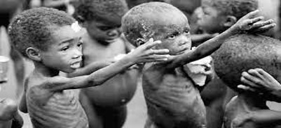
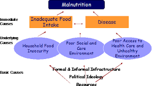

Malnutrition

-Malnutrition occurs when the body doesn't get enough nutrients. Causes include a poor diet, digestive conditions or another disease. Symptoms are fatigue, dizziness and weight loss. Untreated malnutrition can cause physical or mental disability. More than 1 million cases per year (India).
-Malnutrition can cause other diseases such like Obesity, Vitamin Deficiency, Anaemia etc.
-It can lead to serious health issues, including stunted growth, eye problems, diabetes and heart disease
Causes of Malnutrition:-

-Poverty is the biggest challenge for the people of India to get a country from developing to developed country. Poverty let the people to face the situation of Malnutrition.
-There are some people those who are unaware of these Diseases and their causes, so to make them aware government should introduce some new schemes and laws, also government should take the surveys for this.
-Government should improve the Health Care, Sanitation and Education system in certain areas.
Innovative solutions for Malnutrition